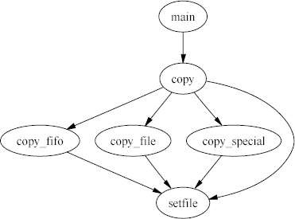
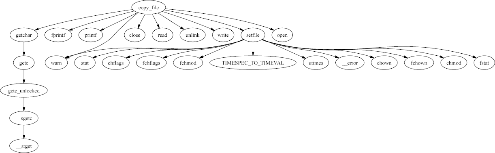
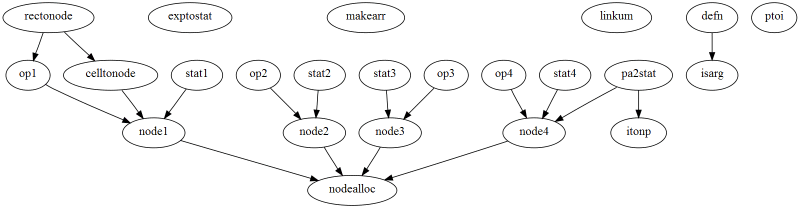

Two global options specify the format of the call graph and the content on each graph's node. Through these options you can obtain graphs in
calling function -> called function
Two links on the main page
(function and macro call graph, and non-static function call graph)
can give you the call graphs of the complete program.
For any program larger than a few thousand lines,
these graphs are only useful in their textual form.
In their graphical form, even with node information disabled,
they can only serve to give you a rough idea of how the program is
structured.
The following image depicts how the three different programs we
analyzed in the bin example relate to each other.
More useful are the call graphs that can be generated for individual functions or files. These can allow you to see what paths can possibly lead to a given function (call graph of all callers), which functions can be reached starting from a given function, the function in context, and how functions in a given file relate to each other.
As an example, the following diagram depicts all paths leading to the
setfile function.

Correspondingly, the functions that can be reached starting from the
copy_file function appears in the following diagram.

while the following shows the function setsymtab in context,
depicting all the paths leading to it (callers) and leaving from it
(called functions).

Finally, the following is an example of how the functions in a single
file (parse.c) relate to each other.

| Contents | « Previous Next (Generic Function Queries) » |
 Last change: Wednesday, April 1, 2009 11:08 am
Last change: Wednesday, April 1, 2009 11:08 am
Unless otherwise expressly stated, all original material on this page
created by Diomidis Spinellis is licensed under a
Creative Commons Attribution-Share Alike 3.0 Greece License.